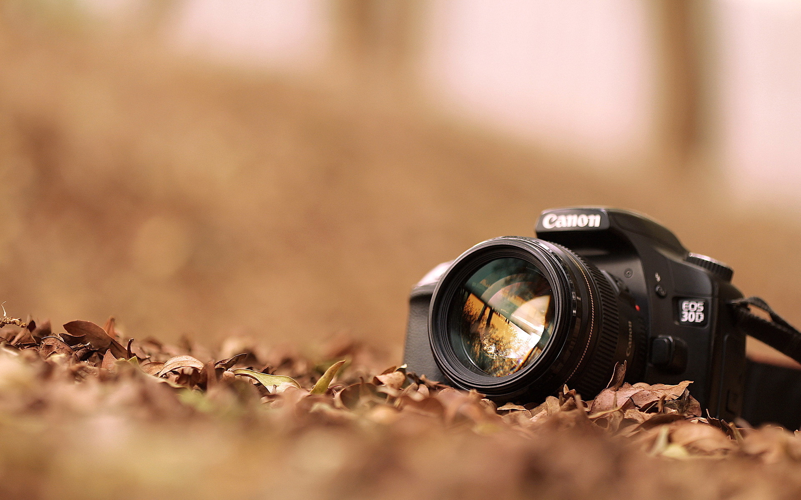

Photography has been my passion for many years. I experimented with many different genres and locations. Below I will share why like it.
Knowing how to use your camera in any situation is a superpower. You can use this ability to document
your life and capture beautiful pictures wherever you like.
The more you work on these abilities, the more you’ll improve. You can think of it as a constant cycle
of personal development.
Make sure that you experiment with lots of genres. You can start with landscape, macro, portrait, and
street photography. The more
skills you develop, the more confident you’ll feel.
Every art form has its unique advantages. Even if you’re already an artist or love working on DIY
projects, you’re bound to discover something new in photography.
Photography as a hobby can be instantly gratifying, especially if you find the perfect moment to
capture. It can challenge you in many ways, depending on the genre you choose.
For example, macro photography can help you notice more beauty in details.
The photography community is very large and diverse. There are Facebook groups, Instagram pages, and
international meet-ups for photographers.
If you’re an absolute beginner, you could find it helpful to join a specific group for beginners in
portraiture, for example. You can also reach out to your favourite photographers and ask for advice when
you feel lost.
Being a part of a group will make you feel important, supported, and involved. It might also help you
get through creative blocks and make you more comfortable with the idea of sharing your work online.
Spending more time outside for yourself is rarely a bad idea.
No matter what you decide to photograph, you’ll probably have to go outside to have a photoshoot.
You
might have a specific location in mind you want to shoot in, a friend you’d like to have a photoshoot
with or any other motivation.
Photography as a hobby can bring more excitement to your life. You’ll be more active, more creative, and
more knowledgeable about photography.
You’ll also become more aware of what’s going on outside of your usual routine.
There are many experienced photographers out there, but there is always room for more improvement.
You’ll always discover more things to learn and understand in photography. This could be anything from
new photography camera equipment to new shooting techniques.
Being a lifelong photography student doesn’t mean taking tests for the rest of your life. It means that
no matter how much you learn, there will always be something new to inspire and motivate you.
This will inevitably make your photography journey an endless and exciting one.
Hobbies need to be relaxing and fulfilling, so money isn’t every hobbyist’s top priority. However, you can earn some extra money when you have even a little photography experience.